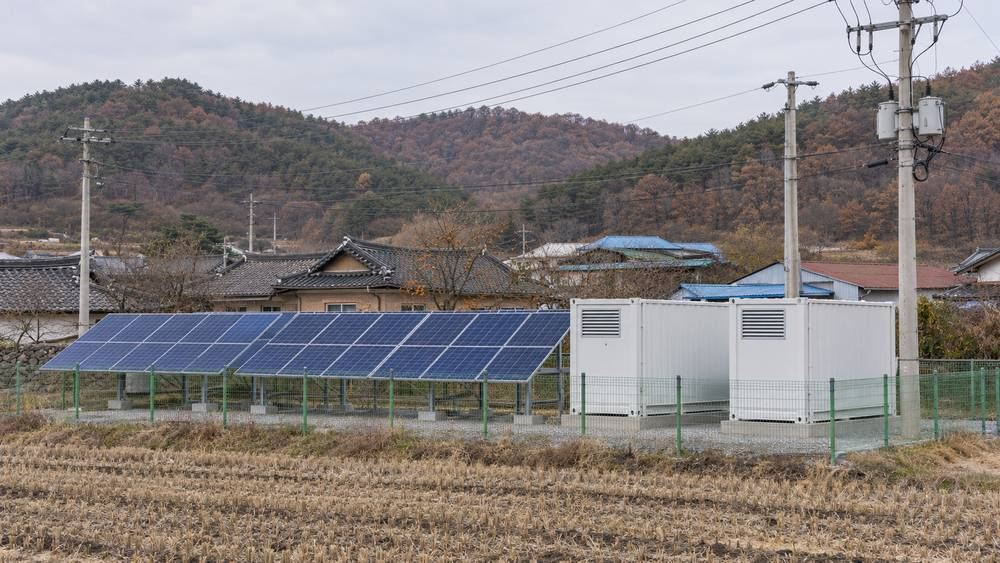

전력망 막힌 햇빛소득마을 133곳에 저장장치, 국비 981억 원 커뮤니티솔라 공모 시작

에너지공단, 55개 배전선로에 ESS 지원…국비 40%·지방비 30%·민간 30% / 5개 권역마다 통합발전소 사업자 1곳, 12월 11일 마감
한국에너지공단 재생에너지센터가 11월 13일 전력망이 꽉 차 태양광을 잇지 못하는 햇빛소득마을의 배전선로에 에너지저장장치(ESS)를 설치하는 「2026년도 커뮤니티솔라 사업」을 국비 981억 원 규모로 공고했다.
총사업비는 정부가 40%, 마을이 있는 지방자치단체가 30%, 민간 사업자가 30%를 나눠 내고, 저장장치 사업비는 방전용량 1MWh당 최대 5억8,600만 원까지 인정한다. 공단이 붙임으로 낸 대상은 전국 55개 배전선로로, 여기에 묶인 햇빛소득마을은 133곳, 산정 용량은 모두 11만7,265kW다.
전국을 전북·전남(제주 포함)·충청·영남·수도권(강원 포함) 5개 권역으로 나눠 권역마다 통합발전소(VPP, 흩어진 발전·저장 설비를 묶어 한 발전소처럼 운영하는 방식) 사업자 1곳을 고르고, 선로마다 4MW/20MWh나 2MW/10MWh 가운데 하나로 설치한다. 운용규정은 사업자가 저장장치에 연결된 마을이 전력망에 바로 연결된 마을과 차별받지 않도록 수익보전 계획을 세워 지키고, 전력시장 정산 내역과 수익배분 근거를 마을에 정기적으로 내놓도록 했다. 신청은 12월 11일 오후 6시까지 전자우편으로 받고, 공단은 12월 중 사업자를 뽑아 2027년 1~2월 사업 규모를 확정한다.
시민에너지 관점
대상 마을 133곳 가운데 전북 33곳·전남 36곳으로 호남이 절반을 넘는다. 전력망이 막혀 주민이 동의하고도 발전소를 못 짓던 마을에 길이 열렸지만, 저장장치를 돌리고 전력시장에서 정산하는 일은 통합발전소 사업자가 맡는다. 사업비의 70%가 국비와 지방비인 만큼, 그 설비로 생기는 이익도 마을 몫이 분명해야 한다. 지방비를 내는 시군은 확약서를 쓰기 전에 마을 수익보전 계획을 숫자로 협약에 담게 하고, 마을 협동조합이 저장장치 운영에도 지분으로 참여할 길을 함께 요구해야 한다.
출처: 한국에너지공단 재생에너지센터 2026-11-13 재생에너지센터 공고 제2026-38호 「2026년도 커뮤니티솔라 사업 공고」(붙임 별첨1 권역별 배전선로 현황·별첨2 운용규정) 원문 보기
출처: pv magazine 2026-11-16 Brian Publicover 원문 보기